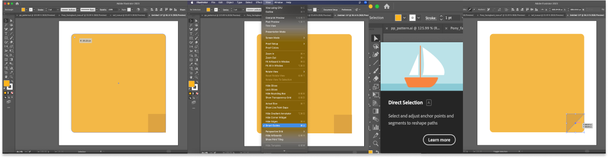

How To Make:
Simple Sticky Note in Adobe Illustrator

7. Select your bigger square and round each of the corners about 30 pixels in radius.
8. At this point, you need to make sure smart guides are on, to do so go up to your top menu bar and inside the "view" drop down menu make sure you see a check mark beside smart guides.
9. Go back to your squares once you see the check and click on your direct selection tool. On your small square and while holding shift, grab the bottom right corner and drag up towards the top left of the box and it should snap right into place in the middle.